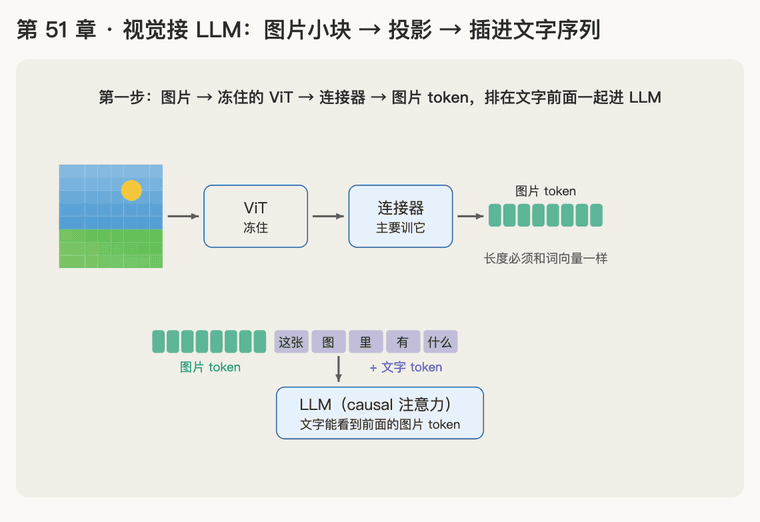

第 51 章 · 视觉接到大语言模型：图片变成"外语单词"，插进文字序列
本章回答：大语言模型只会读 token，怎么让它"看图说话"？LLaVA 的一个投影矩阵、BLIP-2 的 32 个查询向量，分别怎么把图片特征变成语言模型能读的 token？Qwen2-VL 为什么能吃任意分辨率的图，图片 token 的"位置"又怎么编号？
讲解日期：2026-11-18 · 上一章：第 50 章 DiT 与 MM-DiT · 下一章：无（本书最后一章；工业案例见nvidia-cosmos3/）
对应原文：LLaVAtransformer-deep-dive/materials/text/papers/llava-2304.08485.txt§4.1 L240–L252（式 1）、§4.2 两阶段训练 L291–L305；BLIP-2blip2-2301.12597.txt摘要 L28–L34、§3.1 Q-Former L150–L175、§3.3 接 LLM L224–L232；Qwen2-VLqwen2-vl-2409.12191.txt§2.1 L158–L192（Naive Dynamic Resolution、M-RoPE）、Table 1 L96–L102
本章缩写：LLM = Large Language Model（大 / 语言 / 模型）；VLM = Vision-Language Model（视觉–语言模型）；LLaVA = Large Language and Vision Assistant（大型语言与视觉助手）；BLIP-2 = Bootstrapping Language-Image Pre-training（自举式语言–图像预训练）第 2 版；Q-Former = Querying Transformer（查询 / Transformer）；query（查询向量：一组学出来的"提问者"）；FC = Fully-Connected（全连接层，就是线性层）；\(Z_v\)：图片编码器输出的特征（v = vision）；\(H_v\)：投影后的图片 token；W：投影矩阵；Qwen2-VL（通义千问 2 的视觉语言版）；RoPE = Rotary Position Embedding（旋转 / 位置 / 编码，第 15 章）；M-RoPE = Multimodal RoPE（多模态 RoPE）；ID = identifier（编号）。全部缩写见 附录 · 缩写与术语表
讲解
第一步：总体结构：编码器 → 连接器 → 语言模型（2026-11-18）
类比：给只懂中文的作家配一个翻译。 语言模型是一位很会写的作家，但只读得懂"中文"（它词表里的 token 向量）。图片是"外语"。办法是找一个翻译，把图片翻成作家读得懂的一串"词"，插在问题前面，作家就能看着这些"词"回答。
三段：
| 部分 | 用什么 | 训练时动不动 |
|---|---|---|
| 图片编码器 | 一个训好的 ViT，常用 CLIP / SigLIP 的那一个（第 44、46 章） | 通常冻住 |
| 连接器 | 线性层（LLaVA）、Q-Former（BLIP-2）、MLP（Qwen2-VL） | 主要训它 |
| 语言模型 | 训好的 LLM | 先冻住，后面微调 |
关键约束：连接器的输出必须和 LLM 词向量一样长（前作第 22 章的 \(d_{model}\)），这样图片 token 和文字 token 才能排在同一条序列里。之后的事全交给 LLM：它对整条序列做 causal 自注意力（前作第 17 章），文字 token 自然能"看到"前面的图片 token。
一句话：视觉语言模型 = 冻住的图片编码器 + 一个连接器 + 语言模型；连接器把图片特征变成和词向量一样长的 token，插进文字序列。
第二步：LLaVA：一个投影矩阵就够了（2026-11-18）
做法（§4.1，L244–L250）：图片编码器用 CLIP 的 ViT-L/14，取网格特征 \(Z_v = g(X_v)\)（每个小块一个向量）；用一个可训练的矩阵 W 把它们变成词向量那么长：
| 符号 | 意思 |
|---|---|
| \(X_v\) | 输入图片 |
| g | CLIP 的图片编码器（冻住） |
| \(Z_v\) | 每个小块一个特征向量 |
| W | 投影矩阵：特征长度 → 词向量长度 |
| \(H_v\) | 一串"图片 token"，和词向量同样长 |
224 × 224 的图、ViT-L/14：(224 / 14)² = 256 个小块，就是 256 个图片 token。原文说这个投影"很轻"，方便快速试数据（L251–L252）。
数字演示（编的：特征 3 维、词向量 2 维，两个小块，按行写）：
两行就是两个图片 token，接在"这张图里有什么？"的词向量前面，一起送进 LLM。
两阶段训练（§4.2，L291–L305）：
| 阶段 | 训什么 | 数据 | 目的 |
|---|---|---|---|
| 1 特征对齐 | 只训 W，编码器和 LLM 都冻住 | 59.5 万对图文（问"简单描述一下"，答原配文） | 让图片 token 落在 LLM 词向量的"地盘"里，原文比作给冻住的 LLM 训一个"视觉 tokenizer" |
| 2 端到端微调 | W 和 LLM 一起训，编码器仍冻住 | 15.8 万条多轮对话、细节描述、推理（L183） | 学会按指令回答 |
loss 就是第 1 章的交叉熵：只在"回答"那些 token 上算。
一句话：LLaVA 用一个投影矩阵把 CLIP 的 256 个小块特征变成 256 个"图片 token"；先只训矩阵对齐，再连 LLM 一起微调。
第三步：BLIP-2：32 个查询向量当瓶颈（2026-11-18）
问题：每张图 256 个甚至更多 token，塞进 LLM 很占地方。能不能先压一压？
类比：派 32 个记者去采访。 不把整场发布会的录像都给作家，而是派 32 个记者（query）去现场，每人带回一段摘要。记者的问题是学出来的。
Q-Former（§3.1，L150–L173）：
- 一组可学习的查询向量：32 个，每个 768 维，本身就是模型参数（L168–L170）；
- 它们在一个小 Transformer 里：彼此做自注意力，并通过交叉注意力去看冻住的图片特征（Q 来自查询向量，K、V 来自图片特征，第 49 章的那种），每隔一层插一个（L152–L156）；
- 输出 Z 是 32 × 768。
压了多少（L171–L173）：
| 尺寸 | 个数 | |
|---|---|---|
| 冻住的图片特征（ViT-L/14） | 257 × 1024 | 263168 |
| Q-Former 输出 Z | 32 × 768 | 24576 |
再用一个全连接层投影到 LLM 词向量的长度，放在文字前面，原文称为"soft visual prompts"（软的视觉提示，L226–L231）。Q-Former 一共 1.88 亿参数，用 BERT-base 初始化（L163–L165）。
两阶段（摘要 L28–L34）：第一阶段只接冻住的图片编码器，学"图文表示"；第二阶段再接冻住的 LLM，学"让 LLM 能根据这 32 个 token 生成文字"。图片编码器和 LLM 始终冻住，只训 Q-Former 和全连接层。
| LLaVA | BLIP-2 | |
|---|---|---|
| 连接器 | 一个线性层 | Q-Former（1.88 亿参数）+ 全连接 |
| 每张图几个 token | 256（和小块一样多） | 32（固定） |
| 优点 | 简单，细节都在 | token 少，省 LLM 的算力 |
一句话：BLIP-2 用 32 个可学习的查询向量，通过交叉注意力从 257 个图片特征里"采访"出 32 个摘要 token，再投影给冻住的 LLM。
第四步：Qwen2-VL：任意分辨率，2 × 2 合并（2026-11-18）
问题：前两种都把图缩成 224 × 224。一张长截图、一页文档缩小以后，字就看不清了。
Naive Dynamic Resolution（朴素的动态分辨率，L158–L168）：
- 不缩放：图片多大，就切出多少个 14 × 14 的小块，token 个数随图片变；
- ViT 里去掉"绝对位置编码"（第 44 章那张学出来的表，只有固定个数的行），换成二维 RoPE（第 15 章），任意大小都能编位置；
- ViT 输出后，用一个 MLP 把相邻的 2 × 2 个 token 合并成 1 个（和第 45 章的 patch merging 一个思路），token 数变成 1/4；
- 前后各加一个特殊 token
<|vision_start|>、<|vision_end|>。
数字演示（patch 14）：
| 图片 | 小块 | 2 × 2 合并后 | 加首尾两个特殊 token |
|---|---|---|---|
| 224 × 224 | 16 × 16 = 256 | 64 | 66（原文的例子，L167–L168） |
| 448 × 448 | 32 × 32 = 1024 | 256 | 258 |
| 448 × 224（横图） | 32 × 16 = 512 | 128 | 130 |
| 1344 × 896 | 96 × 64 = 6144 | 1536 | 1538 |
图越大 token 越多，细节保留得越好，代价是 LLM 要处理的序列更长（前作第 23 章的 \(n^2\)）。Qwen2-VL 的 2B、7B、72B 三个版本用的是同一个 6.75 亿参数的 ViT（Table 1，L96–L102）。
一句话：Qwen2-VL 不缩放图片，按原分辨率切小块，ViT 用二维 RoPE，再用 MLP 把 2 × 2 个 token 合成一个，224 × 224 的图变成 66 个 token。
第五步：M-RoPE：图片 token 的位置用三个编号（2026-11-18）
问题：文字是一维的，第 1、2、3 个词；图片是二维的，视频还多一个时间轴。把图片 token 排成一行、按 1、2、3 编号，"上下相邻"的信息就丢了。
M-RoPE（L171–L192）：把旋转位置编码拆成三份，每个 token 的位置是三个编号：(时间, 高, 宽)。
| token 类型 | 时间编号 | 高编号 | 宽编号 |
|---|---|---|---|
| 文字 | 和普通位置一样 | 和时间相同 | 和时间相同（三个一样，就等于普通的一维 RoPE，L185–L186） |
| 图片 | 整张图同一个 | 按所在行 | 按所在列 |
| 视频 | 每一帧加 1 | 按行 | 按列 |
换模态时接着编：下一段的起始编号 = 前面所有编号里的最大值 + 1（L189–L191）。
数字演示（编的）：文字"描述 这张 图"，接一张合并后只有 2 × 2 个 token 的小图，再接一个文字"。"：
| token | (时间, 高, 宽) |
|---|---|
| 描述 | (0, 0, 0) |
| 这张 | (1, 1, 1) |
| 图 | (2, 2, 2) |
| 图片 左上 | (3, 3, 3) |
| 图片 右上 | (3, 3, 4) |
| 图片 左下 | (3, 4, 3) |
| 图片 右下 | (3, 4, 4) |
| 。 | (5, 5, 5)：前面最大是 4，所以从 5 开始 |
左上和左下的"宽"编号相同、"高"差 1，模型就知道它们上下相邻。
一句话：M-RoPE 给每个 token 三个位置编号（时间、高、宽），文字三个相同，图片按行列编，视频按帧加时间；换模态时从最大编号 + 1 接着编。
动画演示：图片小块 → 投影 → 插进文字序列

可交互版：animations/51-vision-llm.html（需要用本地服务打开，见 animations/README.md"跑起来看"；滑块：图片边长从 224 拖到 1344，看 Qwen2-VL 的 token 数怎么涨）。
怎么看：
- 图片 → ViT → 连接器 → 一串图片 token，和文字 token 排成一条序列进 LLM（第一步）；
- LLaVA：256 个小块逐个投影，256 个 token（第二步）；
- BLIP-2：32 个查询向量去"采访"257 个特征，只留 32 个 token（第三步）；
- Qwen2-VL：按原尺寸切块，2 × 2 合并，再加首尾两个特殊 token（第四步）；
- M-RoPE：每个 token 标上（时间, 高, 宽）（第五步）。
练习与作答记录
题 1（第一、二步）：（a）LLaVA 的投影矩阵 W 为什么输出长度必须等于 LLM 词向量的长度？（b）第一阶段为什么只训 W？
题 2（第三步）：BLIP-2 的查询向量是 32 个。（a）不管图片多大，送进 LLM 的图片 token 都是几个？（b）它和 LLaVA 相比，省了什么、可能丢了什么？
题 3（第四步）：一张 672 × 448 的图，Qwen2-VL（patch 14，2 × 2 合并，加首尾两个特殊 token）一共多少个图片 token？
题 4（第五步）：文字"看 图"（编号从 0 开始），接一张合并后 1 行 3 列的图，再接文字"好"。写出每个 token 的（时间, 高, 宽）。
口诀
作家只读自家词，图片先请翻译来：编码器冻住，连接器来训，长度对齐插队前。
LLaVA 一个矩阵投，先对齐、再微调。
BLIP-2 派记者，三十二个去采访，交叉注意力带摘要。
Qwen 不缩原图切，二乘二合一，首尾加标记。
位置拆成三个号：时间高宽，文字三同；换段从最大加一接着编。
本章复习卡片
必背：B18–B19（B18 三种连接器：LLaVA、BLIP-2、Qwen2-VL；B19 动态分辨率的 token 数与 M-RoPE 编号）。练习做完后，按答错、卡住的地方再补。
附录 · 延伸阅读
留给以后深入学习用，不影响本章主线。★ 是建议先读的。
推荐阅读
| 读什么 | 读哪里 | 读它为了什么 |
|---|---|---|
| ★ Visual Instruction Tuning（LLaVA，Liu 等 2023） | §3 指令数据 L160–L190；§4.1 L240–L252；§4.2 L291–L310 | 本章原文：投影、两阶段训练、用 GPT-4 造指令数据 |
| ★ BLIP-2（Li 等 2023） | §3.1 Q-Former L150–L175；§3.2 三个预训练目标；§3.3 L224–L232 | 查询向量瓶颈、冻住两头只训中间 |
| ★ Qwen2-VL（Wang 等 2024） | §2.1 L158–L192；消融 L719 起 | 动态分辨率、2 × 2 合并、M-RoPE |
| Flamingo（Alayrac 等 2022） | 全文（本地没有文本版） | 另一条路：在 LLM 层之间插交叉注意力，图片不进序列 |
| LLaVA-1.5（Liu 等 2023） | 全文（本地没有文本版） | 线性层换成两层 MLP、分辨率提到 336 |
| 本书第 15 章（RoPE，待写） | 旋转位置编码本身 | |
nvidia-cosmos3/ 专题 |
study-plan | 本书视觉部分（第 44–51 章）在一个工业系统里怎么组合 |
数学原理
- 投影对齐维度：\(H_v = Z_v W\)，W 是 \(d_{vision} \times d_{LLM}\)。
- 查询向量瓶颈：交叉注意力输出的行数 = 查询个数（Q 的行数），和图片特征多少无关，所以总是 32 个。
- token 数：\(\frac{H}{14} \cdot \frac{W}{14} \cdot \frac{1}{4} + 2\)（Qwen2-VL）。
- M-RoPE：三组旋转角分别由时间、高、宽编号决定；三者相同时退化为一维 RoPE。
公式清单
| 公式 | 意思 |
|---|---|
| \(H_v = W \cdot Z_v\)，\(Z_v = g(X_v)\) | LLaVA 投影（式 1） |
| Z：32 × 768 ← 交叉注意力(查询, 257 × 1024 特征) | BLIP-2 Q-Former |
| token 数 = (H/14)(W/14)/4 + 2 | Qwen2-VL 动态分辨率 |
| 位置 = (时间, 高, 宽)；下一段从 max + 1 开始 | M-RoPE |
代码对照：把本章的数字用代码算一遍
NumPy。代码在仓库本地
beyond-transformer/solutions/chapter-code/ch51_vision_llm.py，配套测试tests/test_ch51.py，notebook 在notebooks/ch51_vision_llm.ipynb：
bash cd beyond-transformer/solutions/chapter-code uv run python ch51_vision_llm.py uv run pytest tests/test_ch51.py
讲义 ↔ 代码：
| 讲义 | 公式 | 写法 | 跑出来 |
|---|---|---|---|
| 第二步 LLaVA 投影 | \(H_v = Z_v W\) | Z @ W |
[[2, 1], [0.5, 1.5]] |
| 第二步 拼进序列 | 拼接 | build_sequence(H_v, text_emb) |
图片 token 在前、文字 token 在后 |
| 第三步 BLIP-2 压缩 | 个数 | 257 * 1024、32 * 768 |
263168 → 24576 |
| 第四步 Qwen2-VL token 数 | (H/14)(W/14)/4 + 2 | qwen2vl_tokens(H, W) |
224² → 66；448² → 258；448 × 224 → 130 |
| 第五步 M-RoPE | 三个编号 | mrope_ids([...]) |
文字 (0,0,0)…；图 (3,3,3)–(3,4,4)；"。" (5,5,5) |
关键几行：
H_v = Z @ W # LLaVA：每个小块特征投影成词向量长度
seq = np.concatenate([H_v, text_emb]) # 图片 token 排在文字前面，一起进 LLM
n = (H // 14) * (W // 14) // 4 + 2 # Qwen2-VL：切 14 × 14、2 × 2 合并、加首尾标记
ids.append((start, start + r, start + c)) # M-RoPE：图片 token 的 (时间, 高, 宽)
start = max(max(i) for i in ids) + 1 # 下一段从最大编号 + 1 开始
代码里才看得到的 2 件事：
- 原文写 \(W \cdot Z_v\)（列向量），代码按行存特征，写成
Z @ W；W 的形状要跟着转置，这和前作第 12 章"存的是转置"是同一个坑。 - Qwen2-VL 要求宽高都能被 28（= 14 × 2）整除，实际实现会先把图片缩放到最接近的 28 的倍数；讲义里的例子都挑了能整除的尺寸。
自己改一改（不影响练习答案）：
qwen2vl_tokens(896, 896)、qwen2vl_tokens(1792, 1792)：看边长翻倍 token 涨几倍。mrope_ids里把图片换成 3 帧的视频（时间编号每帧加 1），看编号怎么排。